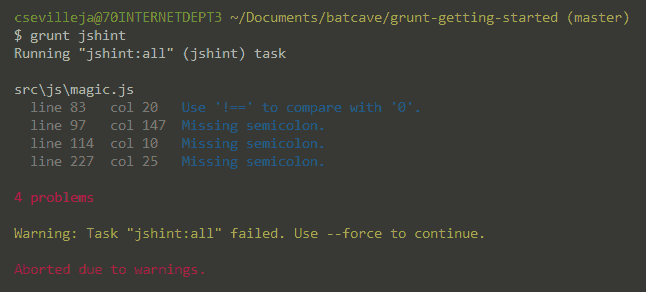

Приступая к работе с Grunt
Во время процесса веб-разработки возникает много задач, которые нам требуется периодически выполнять. Это задачи вроде минимизации JavaScript и CSS-файлов, модульного тестирования, проверки файлов на наличие ошибок, компиляции препроцессорных файлов (Less, Sass) в CSS и многое другое. Grunt предназначен для запуска задач, а значит повторяющиеся задачи, с которыми мы имеем дело каждый день, становятся автоматизированы. Это лишь простой взгляд на то, как запускается и работает Grunt. Мы рассмотрим как выполнять следующие основные задачи:
- анализ JS-файлов;
- минимизация JS-файлов;
- компиляция Less-файлов;
- минимизация CSS-файлов;
- отслеживание изменения файлов и выполнение вышеперечисленных задач.
Исходные файлы вы можете взять из хранилища GitHub.
Быстрый взгляд на Grunt в действии
Предположим, что вы хотите проверить свой JavaScript-файл на наличие ошибок. После установки Grunt просто запустите:
$ grunt jshintИ вы увидите ошибки в файлах JavaScript!

Использовать Grunt довольно просто. Только установите его, а затем запустите желаемую задачу. Grunt выполнит задачу за вас. Это то, что официальный сайт Grunt называет запуском задач.
Делаем всё супер просто
Существует много учебников, в них говорится о замечательных вещах которые вы можете делать с Grunt. Это хорошие учебники, но порой они могут запутать масштабными настройками людей, только начинающих знакомиться с Grunt. Это же руководство по основам Grunt и созданию невероятно простых и легко настраиваемых для управления задач, упомянутых выше. Оно научит вас основам, но позволит задуматься, как мы можем расширить Grunt для будущего продвинутого применения.
Приступаем к работе
Чтобы использовать Grunt нам требуется уже установленный Node.js. Не волнуйтесь, вы можете использовать Grunt в любом желаемом приложении, будь то Node-приложение, PHP-приложение, WordPress или просто старый добрый сайт на HTML/CSS/JS. Node и его менеджер пакетов (npm) применяется для получения необходимых пакетов. Каждый пакет выполняет свою функцию, вроде минимизации или анализа. Если Node ещё не установлен на вашем компьютере, возьмите его и мы начнём работать с Grunt. Чтобы убедиться, что Node и npm у вас установлены, перейдите к командной строке и наберите node -v и npm -v. Если видите номера версий, это значит что вы готовы к работе!
Обзор
Файлы нашего проекта хранятся довольно просто. Вот структура файлов для примеров, показанная ниже. Начните с создания папок и файлов, но пока оставьте сами файлы пустыми, мы наполним их позже.
- dist // содержит все наши финальные файлы (минимизированные)
----- css
----- js
- src // хранит исходные файлы
----- css
---------- style.css
---------- pretty.less
----- js
---------- magic.js
Gruntfile.js // конфигурация Grunt
package.json // конфигурация npm (какие пакеты мы тянем)Обратите внимание на папки src и dist. Все наши рабочие файлы хранятся внутри папки src, затем Grunt минимизирует эти файлы и сохраняет их в папку dist. Файлы внутри этой папки предназначены для применения на финальном сайте.
Получение необходимых пакетов для Grunt
При использовании npm мы определяем все необходимые нам пакеты в файле package.json. Давайте перейдём к этому файлу и добавим в него требуемые пакеты. Что делает каждый пакет объясним позже.
// package.json
{
"name": "grunt-getting-started",
"version": "0.1.0",
"devDependencies": {
"grunt": "~0.4.4",
"grunt-contrib-jshint": "latest",
"jshint-stylish": "latest",
"grunt-contrib-uglify": "latest",
"grunt-contrib-less": "latest",
"grunt-contrib-cssmin": "latest",
"grunt-contrib-watch": "latest"
}
}Здесь мы определили имя нашего проекта через name, его версию (version) и необходимые пакеты (devDependencies). На первый взгляд это выглядит загадочно, особенно для того, кто ранее ещё не работал с Node и npm, но скоро вы поймёте, что npm — очень классный менеджер пакетов для проекта.
Пакеты Grunt
Вы удивитесь узнав, что все эти пакеты grunt-contrib-**** делают. Вот сведённые в таблицу популярные пакеты.
| Плагин | Описание |
|---|---|
| contrib-jshint | Валидация файлов через jshint. |
| contrib-uglify | Минимизация JS-файлов с помощью UglifyJS. |
| contrib-watch | Запуск задач, которые следят за изменением файлов. |
| contrib-clean | Очистка файлов и папок. |
| contrib-copy | Копирование файлов и папок. |
| contrib-concat | Объединение файлов в один. |
| contrib-cssmin | Сжатие CSS-файлов. |
| contrib-less | Компиляция Less-файлов в CSS. |
| contrib-imagemin | Уменьшение PNG, JPG и GIF. |
| contrib-compass | Компиляция Sass в CSS через Compass. |
| contrib-htmlmin | Минимизация HTML-файлов. |
Для получения полного списка пакетов посетите хранилище плагинов Grunt. Теперь, когда мы определили нужные нам пакеты, давайте их установим.
Установка пакетов
После подготовки файла package.json перейдите в командную строку и наберите:
$ npm installВы увидите, что npm делает своё дело и тянет эти пакеты в недавно созданную папку node_modules. Теперь у нас есть эти пакеты и они готовы к использованию в проекте. Установка завершена, так что давайте перейдём к настройке задач для Grunt!
Содержание

Все материалы сайта доступны по лицензии Creative Commons «Attribution-NonCommercial» («Атрибуция — Некоммерческое использование») 4.0 Всемирная, если не указано иное.